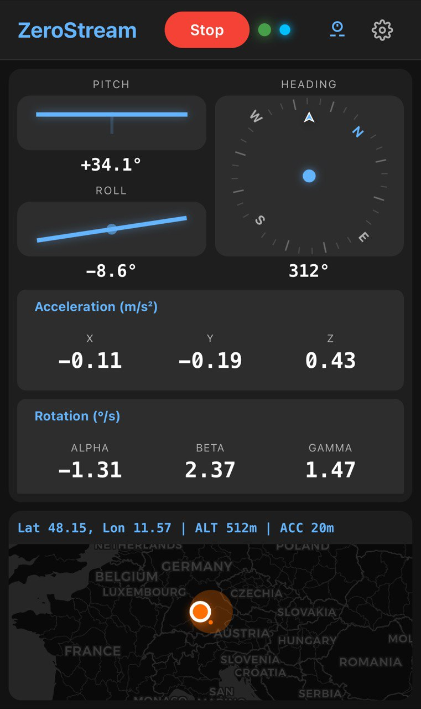

Connected Clients
Loading clients...
Real-Time Sensor Streaming to Databricks Zerobus
Scan the QR code with your mobile device to start streaming sensor data

If you cannot scan the QR code, get the link here. Note: Run this on your mobile device.
Mobile App LinkFamiliarize yourself with the mobile app which continuously streams sensor data to Zerobus. This scales to tens of thousands of clients.

Monitor your streaming sensor data in real-time on the dashboard